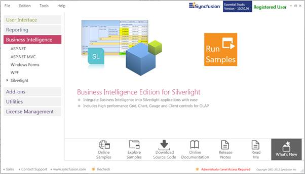
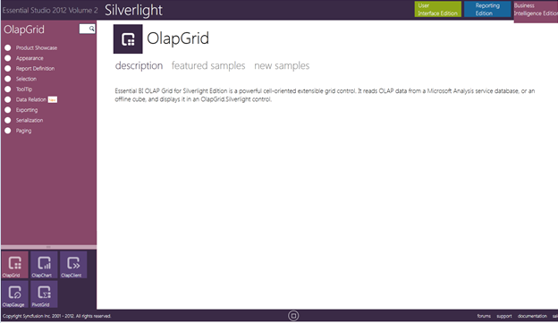
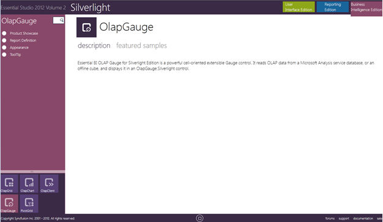

This section covers the location of the installed samples and describes the procedure to run the samples through the sample browser and online. It also provides the location of the source code.
Samples Installation Location
The OLAP Gauge samples are installed locally on the disk, in the following location:
Windows XP:
C:\Syncfusion\EssentialStudio\<version number>\\BI\Silverlight\OlapGauge.SL
Windows 7/Vista:
C:\Users\<User Name>\AppData\Local\ Syncfusion\EssentialStudio\<version number>\\BI\Silverlight\OlapGauge.SL
Viewing Samples
To view the samples:
1. Click StartàAll ProgramsàSyncfusionàEssential Studio <version number> àDashboard.

Figure 2: Syncfusion Essential Studio Dashboard BI
2. In the Dashboard window, click Run Samples for Silverlight under BI Edition. The BI Silverlight Sample Browser window is displayed.
 Note: You can view the samples in any of the
following three ways:
Note: You can view the samples in any of the
following three ways:
· Run Samples-Click to view the locally installed samples.
· Online Samples-Click to view online samples.
· Explore Samples-Explore BI Silverlight samples on disk.

Figure 3: BI Silverlight Sample Browser
3. Select OLAP Gauge. OLAP Gauge samples are displayed.

Figure 4: BI Silverlight Sample Browser OLAPGauge
4. Select any sample and browse the features.
Source Code Location
The default location of the OLAP Gauge source code is:
[System Drive]:\Program Files\Syncfusion\Essential Studio\[Version Number]\BI\OlapGauge.Silverlight\Src